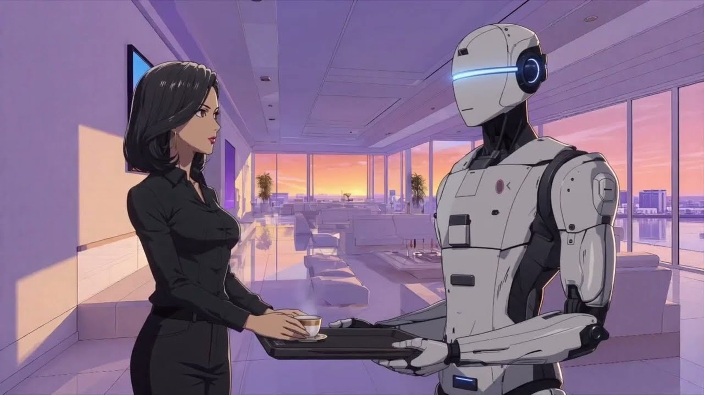
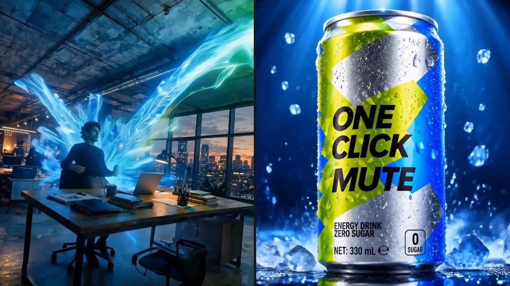
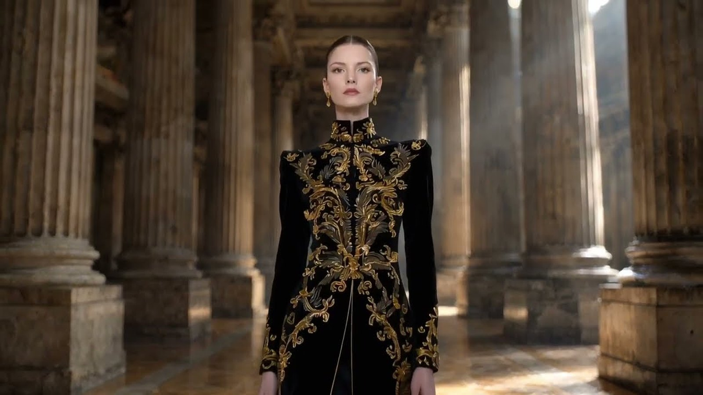
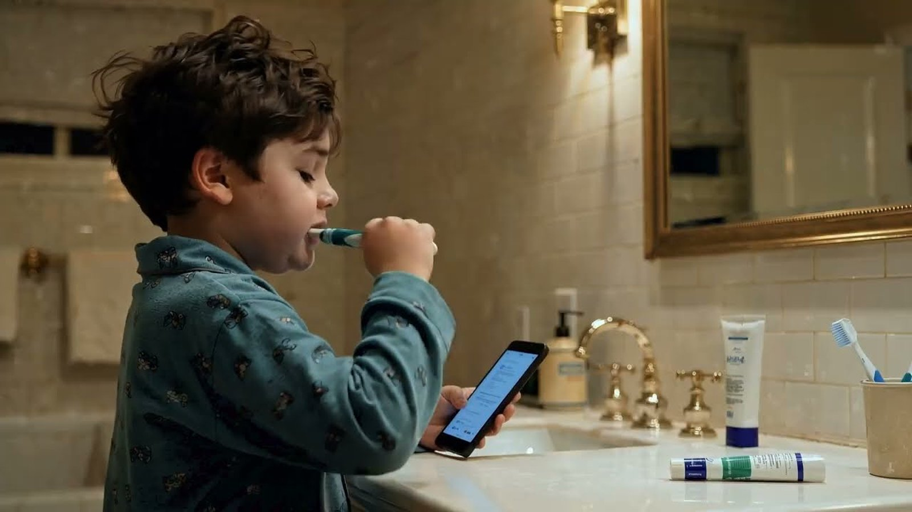
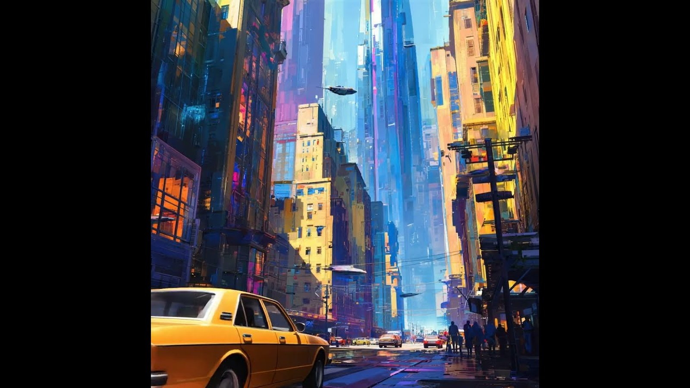
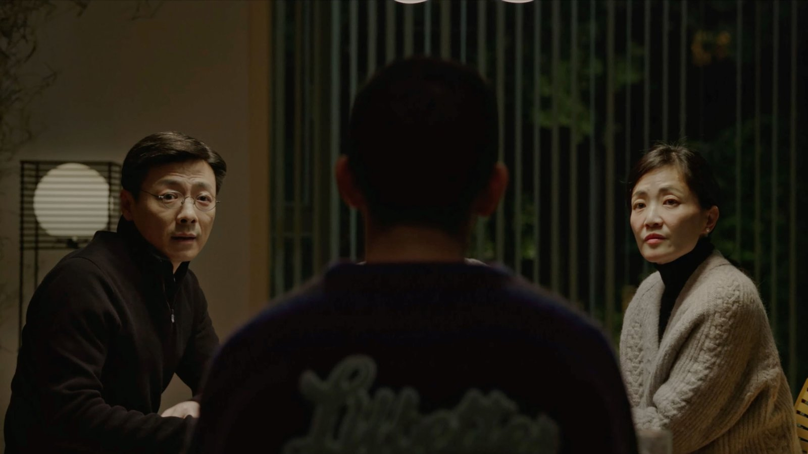
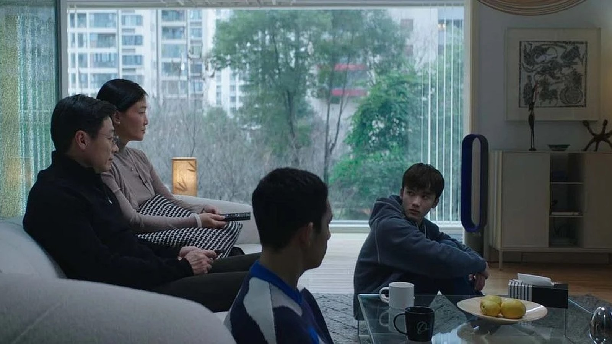
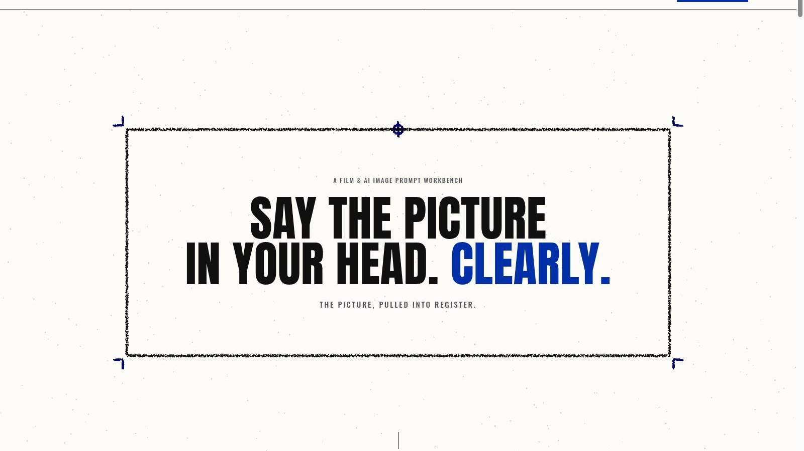

Play
02 · Direction proof · 2:05
HOME × SMARTHOME
Manga Cut: visual direction, style translation, generation, edit and post.

Senior Producer for integrated campaigns — concept through delivery. The stills are the work, not a résumé spacer.
Finished pieces a Giant Spoon Senior Producer can put on the table: commercial-format AI films, fashion and narrative shorts, then the feature stills. Production-company work — not invented agency-client credits.

PlayManga Cut: visual direction, style translation, generation, edit and post.

PlayFashion film with a locked look and a short, reviewable cut.

PlayDirected and produced for continuity across generated shots.

PlayShort visual poem — environment and grade held in one cut.
Released short. Still from the master — no invented frame.

PlaySundance Grand Jury Prize nominee · Berlinale Panorama.
Proof of range for an integrated production seat — festival delivery and a client-requested expansion — without claiming in-house Giant Spoon jobs that did not happen.

PlayFestival and territorial delivery. Nominee, not a win. Panorama selection, not a Berlinale prize.
After the first film, Tencent asked for two more. I produced the resulting three-film package through client approvals and production handoff — production-company EP, not an in-house agency producer on Giant Spoon briefs.
Earlier live-action brand work includes COACH, Nike and BMW from the production-company side. Those jobs are not Giant Spoon campaigns. $8M+ is an aggregate across Final Frontier and earlier brand work, not a single job. Final Frontier’s later Los Angeles studio expansion is not my work.
A production route Giant Spoon can put in front of Creative and the client: what we are making, who owns the next decision, and what it costs.
Deliverables, medium, decision-makers, constraints, and the first budget envelope.
Director and vendor options, bid comparison, schedule, and the assumptions Creative needs to hear early.
Concept, treatment, offline, finish, and legal/talent checks have named owners and dates.
Crew, vendors, and client notes stay on one board while other jobs keep moving.
Specs, versions, archive, and cost reconciliation — then a clean handoff to media and account.
Vendor notes and what the last job taught us go back into the next estimate.
The Senior Producer seat asks for someone who can bid a job, hold a vendor, and keep several productions honest at the same time. NYC hybrid — Greater New York, Tuesday through Thursday on site.
A live prompt workbench for film and stills — not a stand-in for this Giant Spoon role page. It keeps model-specific prompts reviewable before anything goes to a client.

Turns creative intent into controllable, model-specific prompts with a human gate before output ships. Hosted on Cloudflare Pages and Workers.
The Giant Spoon brief asks for current production methods, including AI-enabled tools. This is evidence I build the gate, not only talk about it.
Open Prompt Builder ↗Giant Spoon Senior Producer · NYC hybrid · Greater New York · U.S. Permanent Resident · Executive MBA